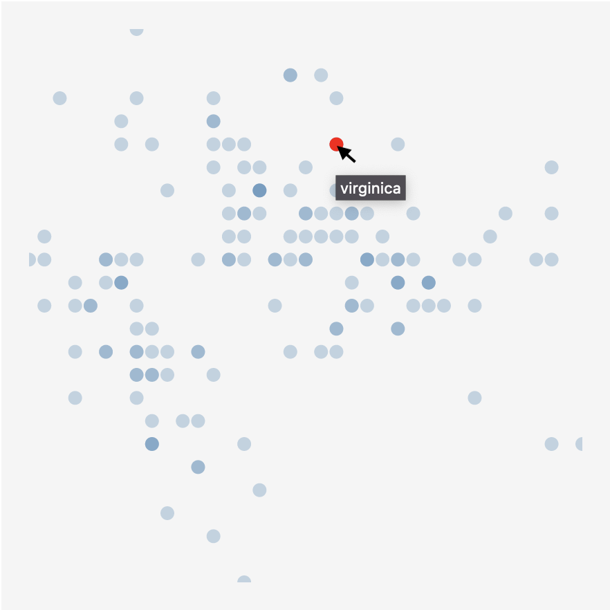

6. Advanced visualisation using svelte
6.1. Slider
Let’s add a slider to the iris visualisation from the previous section that allows us to change the number of flowers displayed in a row instead of the hard-coded 20.
<script>
import Flower from './Flower.svelte';
export let data;
let slider_value = 20; (1)
$: get_xy = function(idx) { (2)
let y = 25 + (Math.floor(idx / slider_value) * 50) (3)
let x = 25 + ((idx % slider_value) * 50) (3)
return [x,y]
}
</script>
Number of flowers per line: {slider_value}<br/>
<input type="range" min="10" max="20" bind:value={slider_value} /><br/> (4)
<svg width=1000 height=1000>
{#each data.flowers as datapoint,idx}
<g transform="translate({get_xy(idx)[0]}, {get_xy(idx)[1]})">
<Flower datapoint={datapoint} />
</g>
{/each}
</svg>We combined what we saw earlier in this section on adding sliders. What changed in our code?
-
(1): We create a new variable that holds the value for the slider and set its default to 20.
-
(2): Our function itself will now change as we change the slider. This means that we need to make the function reactive, and replace
constwith$:. -
(3): We replace the hard-coded value of
20with the value from the slider. -
(4): And we add the actual slider.
The result: INTERACTIVE
Practice
Add a second slider that allows you to change the size of the flowers themselves.
Practice
Change this example so that, instead of a grid of flowers, these flowers are presented as a scatterplot based on the length and width of their sepals, like so:
Getting back to our airport data, let’s create a version with a slider that highlights only those airports serving flights with a given distance:
INTERACTIVE
The code:
<script>
let slider_value = 5000;
export let data = []
const rescale = function(x, domain_min, domain_max, range_min, range_max) {
return ((range_max - range_min)*(x-domain_min))/(domain_max-domain_min) + range_min
}
</script>
<style>
circle {
opacity: 0.5;
fill: blue;
}
circle.international {
fill: red;
}
circle.hidden {
opacity: 0.05;
}
</style>
<h1>Airport flights data</h1>
Airports serving flights in this range (km): {slider_value - 1000} - {slider_value + 1000} <br/>
<input type="range" min="1" max="15406" bind:value={slider_value} class="slider" id="myRange" />
<svg width=1000 height=500>
{#each data.flights as datapoint}
<circle cx={rescale(datapoint.from_long, -180, 180, 0, 800)}
cy={rescale(datapoint.from_lat, -90, 90, 400, 0)}
r={rescale(datapoint.distance, 1, 15406, 2,10)}
class:international="{datapoint.from_country != datapoint.to_country}"
class:hidden="{Math.abs(datapoint.distance - slider_value) > 1000}">
<title>{datapoint.from_airport}</title>
</circle>
{/each}
</svg>6.2. Tooltips
Following the "overview first, zoom and filter, and details on demand" mantra, we want to be able to show details when we hover over a datapoint.
A quick and dirty way to do this, is by using a title element embedded within the visual element. For example: instead of
<circle cx=50 cy=50 r=10 />we can write
<circle cx=50 cy=50 r=10>
<title>My tooltip</title>
</circle>When we hover over that circle, the text "My tooltip" will be shown after a couple of seconds. You can replace that hard-coded text with, for example, {datapoint.species}. The result:

But we can take this much further, and show the glyph of the flower and additional information as the tooltip, like in the examples below.
To make this happen, we create a div that is only shown if selected_datapoint is defined.
Our Flower.svelte is the same as we had above. +page.svelte becomes:
<script>
import Scatterplot from './Scatterplot.svelte'
export let data = [];
$: console.log(data.flowers)
</script>
<style>
circle {
fill: steelblue;
fill-opacity: 0.5;
}
</style>
<Scatterplot datapoints={data.flowers} x="sepalLength" y="sepalWidth"/>We adapt Scatterplot.svelte like so:
<script>
import { scaleLinear } from 'd3-scale';
import { extent } from 'd3-array';
import Flower from './Flower.svelte'
export let datapoints = [];
export let x;
export let y;
export let selected_datapoint = undefined;
$: xScale = scaleLinear().domain(extent(datapoints.map((d) => { return d[x]}))).range([0,400])
$: yScale = scaleLinear().domain(extent(datapoints.map((d) => { return d[y]}))).range([0,400])
let mouse_x, mouse_y; (1)
const setMousePosition = function(event) { (2)
mouse_x = event.clientX;
mouse_y = event.clientY;
}
</script>
<style>
svg {
background-color: whitesmoke;
margin: 5px;
padding: 20px;
}
circle {
fill: steelblue;
fill-opacity: 0.3;
}
circle.selected {
fill: red;
fill-opacity: 1;
}
#tooltip { (3)
position: fixed;
background-color: white;
padding: 3px;
border: solid 1px;
}
svg.tooltip { (4)
margin: 0px;
padding: 0px;
}
</style>
<p>{x} by {y}</p>
<svg width=400 height=400>
{#each datapoints as datapoint}
<circle cx={xScale(datapoint[x])} cy={yScale(datapoint[y])}
r=5
class:selected="{selected_datapoint && datapoint.id == selected_datapoint.id}"
on:mouseover={function(event) {selected_datapoint = datapoint; setMousePosition(event)}} (5)
on:mouseout={function() {selected_datapoint = undefined}}/>
{/each}
</svg>
{#if selected_datapoint != undefined} (6)
<div id="tooltip" style="left: {mouse_x + 10}px; top: {mouse_y - 10}px">
<svg class="tooltip" width=20 height=20>
<g transform="translate(10,10)">
<Flower datapoint={selected_datapoint} />
</g>
</svg><br/>
Species: {selected_datapoint.species}
</div>
{/if}The main magic happens in (6), where we only show this div when selected_datapoint is defined. The div gets an id of tooltip and we set its position next to the location of the mouse (more on that below). The div itself contains an SVG with the flower, and a line of text stating the species. If Flower would be an SVG itself, we wouldn’t have to define the <svg> here, but looking at the Flower.svelte file, it returns a <g> which should be part of an SVG.
The div gets a position that depends on mouse_x and mouse_y. These are set in (5) when we hover over a circle, using the setMousePosition(event) defined in (2). Such mouse event are automatically passed the event that triggers them. Check what is in these events by adding a console.log(event) in the setMousePosition function.
Normally a new div is positioned after the previous one. This means that the tooltip would be displayed to the right of or below the scatterplot, whether or not we define that style attribute in (6). To fix this, we need to set position: fixed; in the CSS. Finally, as we have two SVGs (one for the scatterplot, and one contained within the tooltip), we might have to give each a different style. In our case, we set the padding and margin to 0 for the SVG in the tooltip.
Try it out here: INTERACTIVE
6.3. Axes
There are different ways to draw axes on plots. Looking again at the iris dataset, we can follow the do-it-yourself approach, or use the d3-axis library. In the first option, we draw a long line with small lines and text for each tick. As this approach is very simple it is often used.
<script>
import { scaleLinear } from 'd3-scale';
import { extent } from 'd3-array';
export let datapoints = [];
let margins = {"left": 30, "top": 30, "bottom": 30, "right": 30}
$: xDomain = extent(datapoints, (d) => d.sepalLength)
$: yDomain = extent(datapoints, (d) => d.sepalWidth)
$: xScale = scaleLinear().domain(xDomain).range([margins.left,300-margins.right])
$: yScale = scaleLinear().domain(yDomain).range([margins.top,300-margins.bottom])
$: console.log(xDomain)
$: xTicks = [4.5,5,5.5,6,6.5,7,7.5]
$: yTicks = [2,2.5,3,3.5,4]
</script>
<style>
svg { background-color: whitesmoke }
circle { opacity: 0.5; }
line { stroke: black; }
text { font-size: 12px; }
text.x { text-anchor: middle; }
text.y { text-anchor: end; }
</style>
<svg width=300 height=300>
{#each datapoints as datapoint}
<circle cx={xScale(datapoint.sepalLength)} cy={yScale(datapoint.sepalWidth)} r=5 />
{/each}
<!-- x axis -->
<line x1={margins.left} y1={300-margins.bottom} x2={300-margins.right} y2={300-margins.bottom} />
{#each xTicks as tick}
<line x1={xScale(tick)} y1={300-margins.bottom-3} x2={xScale(tick)} y2={300-margins.bottom+3} />
<text class="x" alignment-baseline="hanging" x={xScale(tick)} y={300-margins.bottom+5}>{tick}</text>
{/each}
<!-- y axis -->
<line x1={margins.left} y1={margins.top} x2={margins.left} y2={300-margins.bottom} />
{#each yTicks as tick}
<line x1={margins.left-3} y1={yScale(tick)} x2={margins.left+3} y2={yScale(tick)} />
<text class="y" alignment-baseline="middle" x={margins.left-5} y={yScale(tick)}>{tick}</text>
{/each}
</svg>The result:
6.4. Brush
6.4.1. Using hover
Being able to link different visuals together can have a big impact on how much insight you can gain from them. Below, we will look into how to make this happen. We’ll create two scatterplots on the iris data, and link these together. The final result will be as below. Notice that when you hover over a point, there will also be a point in the other scatterplot that becomes red.
INTERACTIVE
Note that there are multiple ways of achieving this, and definitely look into "svelte stores" as well. Here’s we’ll go bare bones and do the minimum possible.
Scatterplot.svelte:
<script>
import { scaleLinear } from 'd3-scale';
import { extent } from 'd3-array';
export let datapoints = []
export let x;
export let y;
export let selected_datapoint = undefined; (1)
$: xScale = scaleLinear()
.domain(extent(datapoints.map((d) => { return d[x]})))
.range([0,400])
$: yScale = scaleLinear()
.domain(extent(datapoints.map((d) => { return d[y]})))
.range([0,400])
</script>
<style>
svg {
background-color: whitesmoke;
margin: 5px;
padding: 20px;
}
circle {
fill: steelblue;
fill-opacity: 0.3;
}
circle.selected { (2)
fill: red;
fill-opacity: 1;
}
</style>
<p>{x} by {y}</p>
<svg width=400 height=400>
{#each datapoints as datapoint}
<circle cx={xScale(datapoint[x])} cy={yScale(datapoint[y])}
r=5
on:mouseover={function() {selected_datapoint = datapoint}} (3)
on:mouseout={function() {selected_datapoint = undefined}} (4)
class:selected="{selected_datapoint && datapoint.id == selected_datapoint.id}" (5)
/>
{/each}
</svg>What happens here?
-
(1) We’ll need to have a
selected_datapointvariable to keep track of which datapoint is the selected one. -
(2) Instead of using
circle:hover, we will set the class of our datapoint toselectedand apply styles like that. -
(3) Using
on:mouseoverwe can set theselected_datapoint… -
(4) … which is unset on
on:mouseout. -
(5) Finally, we can set the class of our circle to
selectedifselected_datapointis defined and the id of our datapoint is the same as the selected datapoint.
src/routes/+page.svelte:
<script>
import Scatterplot from "./Scatterplot.svelte";
export let data = [];
let selected_datapoint = undefined;
</script>
<table>
<tr>
<td><Scatterplot
bind:selected_datapoint
datapoints={data.flowers}
x="sepalLength"
y="sepalWidth" /></td>
<td><Scatterplot
bind:selected_datapoint
datapoints={data.flowers}
x="petalLength"
y="petalWidth" /></td>
</tr>
</table>We define a variable selected_datapoint (1) that will contain a copy of any datapoint that we hover over in any of the scatterplots. Next, we way of checking if a circle is selected. We can do this by adding a unique ID to all datapoints (2). Finally, we pass the selected datapoint to the scatterplots themselves, but do this using the bind operator, so that these scatterplots can pass that info back into the main code (from where it then can be passed to the other scatterplot).
6.4.2. Using a brush
The above is a poor-man’s version, and we’d like to have a more useful brush where you can select a region of the plot. D3 allows you to do this, but again: it does some things that are unclear to the beginning javascript programmer. In the example below, we only create a proof-of-concept for brushing; in a real setting you would create separate components which would solve some of the issue of the brush going outside the plot, etc.
The plots below show the iris dataset: the left part shows sepal length (x-axis) vs sepal width (y-axis); the right part sepal length (x-axis) vs petal length (y-axis). Brushing on the left part selects flowers that are then highlighted on the right one.
INTERACTIVE
src/routes/+page.svelte:
<script>
import { scaleLinear } from 'd3-scale';
import Papa from 'papaparse';
import { onMount } from 'svelte';
import { extent } from 'd3-array'
let w = 400;
let h = 400;
let datapoints = []
onMount(() => {
Papa.parse("https://vda-lab.github.io/assets/iris.csv", {
header: true,
download: true,
complete: function(results) {
let counter = 0
datapoints = results.data.slice(0,-1)
datapoints.map((d) => d.sepal_length = +d.sepal_length)
datapoints.map((d) => d.sepal_width = +d.sepal_width)
datapoints.map((d) => d.petal_length = +d.petal_length)
datapoints.map((d) => d.petal_width = +d.petal_width)
datapoints.forEach((d) => {
d["id"] = counter
counter++;
})
}
})
})
// slScale: sepal_length, swScale: sepal_width, plScale: petal_length
$: slScale = scaleLinear().domain(extent(datapoints.map((d) => { return d.sepal_length}))).range([5,w-5])
$: swScale = scaleLinear().domain(extent(datapoints.map((d) => { return d.sepal_width}))).range([h-5,5])
$: plScale = scaleLinear().domain(extent(datapoints.map((d) => { return d.petal_length}))).range([h-5,5])
let selectedDatapoints = [];
// $: console.log(datapoints.filter((d) => { return selectedDatapoints.includes(d.id) }))
let dragging = false;
let startX = 0; let startY = 0;
let startDataX = 0; let startDataY = 0;
let brushWidth = 0; let brushHeight = 0;
let mouseX = 0; let mouseY = 0;
let mouseDataX = 0; let mouseDataY = 0;
const startBrush = (e) => {
startX = e.offsetX;
startY = e.offsetY;
startDataX = slScale.invert(startX)
startDataY = swScale.invert(startY)
mouseX = startX;
mouseY = startY;
dragging = true;
};
const updateBrush = (e) => {
mouseX = e.offsetX;
mouseY = e.offsetY;
mouseDataX = slScale.invert(mouseX)
mouseDataY = swScale.invert(mouseY)
brushWidth = mouseX - startX;
brushHeight = mouseY - startY;
if (brushWidth < 0) { brushWidth = -brushWidth; }
if (brushHeight < 0) { brushHeight = -brushHeight; }
};
const getBrushedDatapoints = () => {
selectedDatapoints = datapoints
.filter((d) => {
return (
Math.min(startDataX, mouseDataX) < d.sepal_length && d.sepal_length < Math.max(startDataX, mouseDataX) &&
Math.min(startDataY, mouseDataY) < d.sepal_width && d.sepal_width < Math.max(startDataY, mouseDataY)
)})
.map((d) => d.id);
};
</script>
<svg width={w*2} height={h}
on:mousedown={(e) => { startBrush(e); }}
on:mousemove={(e) => { if (dragging) { updateBrush(e); getBrushedDatapoints(); } }}
on:mouseup={() => { dragging = false; }}
on:dblclick={() => { brushWidth = 0; brushHeight = 0; }}
>
<rect class="brush" x={Math.min(startX, mouseX)} y={Math.min(startY, mouseY)}
width={brushWidth} height={brushHeight} />
<g>
{#each datapoints as datapoint}
<circle cx={slScale(datapoint.sepal_length)} cy={swScale(datapoint.sepal_width)} r="5"
class:selected={selectedDatapoints.includes(datapoint.id)} />
{/each}
</g>
<line x1={w} x2={w} y1=0 y2={h} />
<g class="plot" transform="translate({w},0)">
{#each datapoints as datapoint}
<circle cx={slScale(datapoint.sepal_length)} cy={plScale(datapoint.petal_length)} r="5"
class:selected={selectedDatapoints.includes(datapoint.id)} />
{/each}
</g>
</svg>
<style>
line { stroke: black}
circle { fill: steelblue; }
circle.selected { fill: red; }
rect.brush { fill: black; fill-opacity: 0.3; }
</style>6.5. Specific visuals
Below, we will just post example code that can be used as a starting point for more complex visuals. We won’t go in depth into explaining this code, though.
6.5.1. Map
We have shown airports by just plotting their longitude and latitude as a scatterplot, but it’d be nice to plot them on top of an actual map. There are different libraries for doing this, including D3 (see https://www.pluralsight.com/guides/maps-made-easy-with-d3) and leaflet.js, developed by Vladimir Agafonkin.
You’ll first have to install the leaflet library with npm install leaflet. You will also have to add the following line to your +page.js: export const ssr = false;
A minimal, basic map:
<script>
import { onMount } from "svelte";
import L from "leaflet";
export let data = [];
let map;
onMount(async () => {
map = L.map("map", { preferCanvas: true }).setView(
[50.8476, 4.3572],
2,
);
L.tileLayer(
"https://{s}.basemaps.cartocdn.com/rastertiles/voyager/{z}/{x}/{y}{r}.png",
{
attribution:
'Map data © <a href="https://www.openstreetmap.org/">OpenStreetMap</a> contributors, <a href="https://creativecommons.org/licenses/by-sa/2.0/">CC-BY-SA</a>',
maxZoom: 18,
},
).addTo(map);
let real_brussels = L.marker([50.901, 4.4856]).addTo(map);
real_brussels.bindTooltip("Real Brussels airport").openTooltip();
let brussels_in_datafile = L.marker([51.502, 4.807], {
markerColor: "red",
}).addTo(map);
brussels_in_datafile
.bindTooltip("Brussels airport in datafile")
.openTooltip();
data.flights.forEach((d) => {
L.circle(
[+d.from_lat, +d.from_long],
{
stroke: false,
color: "black",
radius: 50000 // is radius in meters
},
).addTo(map);
});
});
</script>
<svelte:head>
<link
rel="stylesheet"
href="https://unpkg.com/leaflet@1.6.0/dist/leaflet.css"
crossorigin=""
/>
<script
src="https://unpkg.com/leaflet@1.6.0/dist/leaflet.js"
crossorigin=""
>
</script>
</svelte:head>
<div id="map" />
<style>
#map {
height: 480px;
}
</style>
You might see that some of the airports are in the ocean. Indeed, if we look at Brussels airport, the latitude and longitude in the input file are not exactly the same as the real ones.
6.5.2. Force-directed graph
D3 has a very solid library for drawing node-link diagrams, available at https://github.com/d3/d3-force. Data for a network consists of nodes and links, and should be formatted like this:
-
Nodes must have an ID, e.g.
{"id": 1,"name": "A"}. -
Links must have a
sourceand atarget, e.g.{"source": 1,"target": 2}.
Again, first install the necessary library: npm install d3-force.
A simple node-link diagram which allows for dragging nodes around:
<script>
import { onMount } from 'svelte';
import { forceSimulation, forceLink, forceManyBody, forceCenter } from 'd3-force'
let nodes = [
{"id": 1,"name": "A"}, {"id": 2,"name": "B"},
{"id": 3,"name": "C"}, {"id": 4,"name": "D"},
{"id": 5,"name": "E"}, {"id": 6,"name": "F"},
{"id": 7,"name": "G"}, {"id": 8,"name": "H"},
{"id": 9,"name": "I"}, {"id": 10,"name": "J"}
]
let links = [
{"source": 1,"target": 2}, {"source": 1,"target": 5},
{"source": 2,"target": 6}, {"source": 2,"target": 4},
{"source": 2,"target": 7}, {"source": 3,"target": 4},
{"source": 8,"target": 3}, {"source": 4,"target": 5},
{"source": 4,"target": 9}, {"source": 5,"target": 10}
]
let draggedNode = null;
let simulation;
function dragNode(event) {
if ( draggedNode ) {
draggedNode.x = event.offsetX;
draggedNode.y = event.offsetY;
draggedNode.cx = draggedNode.x
draggedNode.cy = draggedNode.y
ticked()
}
}
onMount(runSimulation);
function ticked() {
nodes = nodes
links = links
}
function runSimulation() {
simulation = forceSimulation(nodes)
.force("link", forceLink(links).id(d => d.id))
.force("charge", forceManyBody().strength(-50))
.force("center", forceCenter(200,200))
.on('tick', ticked)
}
</script>
<style>
circle {
fill: steelblue;
visibility:visible;
}
circle:hover {
fill: red;
}
line {
stroke: #999;
stroke-opacity: 0.6;
}
.selected {
fill: red;
r: 7;
}
</style>
<svg
width="400"
height="400"
on:mousemove={dragNode}
on:mouseup={() => { if ( draggedNode ) { runSimulation() }; draggedNode = null; }}>
{#each links as link}
<line x1='{link.source.x}' y1='{link.source.y}'
x2='{link.target.x}' y2='{link.target.y}' >
</line>
{/each}
{#each nodes as point}
<circle
class:selected={point.selected}
cx={point.x}
cy={point.y}
r="8"
on:mousedown={() => { draggedNode = point ; runSimulation() } }
>
<title>{point.id}</title>
</circle>
{/each}
</svg>INTERACTIVE
Practice
Create a network graph where the nodes are not just circles, but a glyph like we did for the iris flowers.